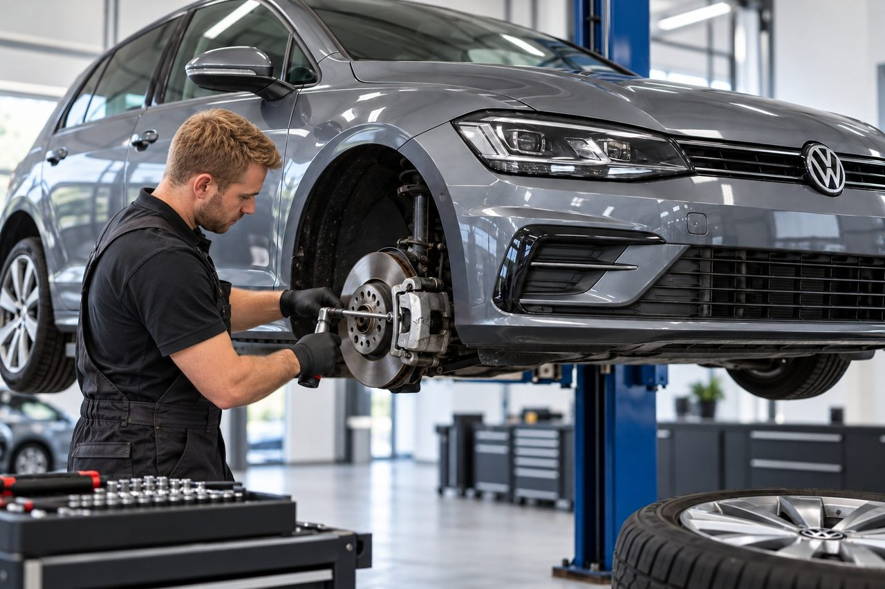
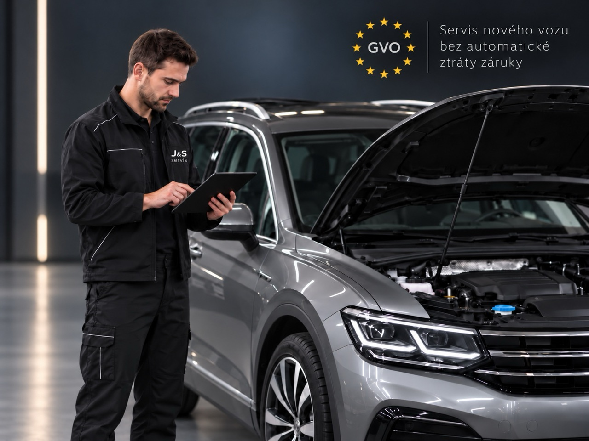

Vehicle servicing

INDEPENDENT VW GROUP SPECIALIST WORKSHOP
Professional service of Volkswagen, Audi, Škoda, SEAT and CUPRA vehicles since 1994.
J&S SERVIS in Statenice near Prague specialises in the maintenance, diagnostics and repair of Volkswagen Group passenger cars and commercial vehicles.
We use the manufacturer's ODIS diagnostic system, dedicated VAS workshop tools and appropriate measuring equipment for diagnostics and repairs. Our work follows the manufacturer's technical information and service procedures.
We focus on identifying the cause of the fault correctly, carrying out quality repairs and communicating clearly. We explain our findings to the customer and carry out additional work only with their approval.
Scheduled servicing
The scope of the inspection is based on the service schedule, age and mileage. It includes prescribed replacements and inspections that help detect wear and tear and possible defects in time. We will inform you about the identified shortcomings and the recommended course of action.
We choose spare parts and vehicle fluids according to the requirements of a specific vehicle. We properly document the work performed and, for vehicles with a supported electronic service history, record the service inspection in the relevant system.
We also take care of new cars under warranty. You can find more in the section Servicing new vehicles under warranty (GVO)
To book, please provide the VIN, current mileage and the work required or a description of the symptoms.
Servicing by brand
-

Volkswagen servicing
Independent car service center focusing on Volkswagen brand technology.
-

-

-

SEAT servicing
Comprehensive service of SEAT vehicles according to the service procedures of the manufacturer.
-
CUPRA servicing
Regular service inspections of CUPRA vehicles according to the manufacturer's service plan and regulations.
-

Volkswagen Commercial Vehicles servicing
Caddy, Transporter, Caravelle, Multivan, California and Crafter.
-

Servicing new vehicles under warranty (GVO)
Even with a new car under warranty, you can use an independent car service.